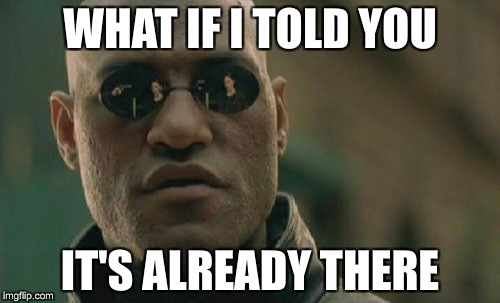

ROS 2
it's coming
Dec. 13th 2017
Dirk Thomas
ROS-Industrial Conference 2017,
Stuttgart, Germany

ROS 2 - Why
- ROS 1 is great!
- But there are some things
which are "improvable"...

What is the same, what is different
- Same concepts
- Nodes, messages, publishers, subscribers, services, ...
- Command line as well as graphical tools
- Different []
- Middleware interface []
- Modern technologies: CMake, C++ 14, Python 3.5, etc.
- Address design flaws:
- No crawling of the FS at runtime (ament resource index)
- Choose process layout at deploy time (node vs. nodelet)
- ...
See the slides / video from the ROSCon 2015 presentation for more information.
How to roll out "the new thing"
- Each ROS release: add new, deprecate old, remove ancient
- That requires every package to move forward
- Add new stuff in parallel in a ROS 1 distribution
- Fragmentation and not transparent:
some packages useroscpp, othersroscpp2
- Fragmentation and not transparent:
- Release a separate distribution
- Each package needs to opt-in when it wants to
See this design article for more information.
ROS 2 Ardent Apalone
released on Dec. 8th 2017
See release page for more information.
Pub / Sub, QoS, Cross Platform / Language


Usage Patterns of the "ros1_bridge"
- Beta
- TurtleBot 2 demo
- Robot using ROS 2 onboard
- Computer uses ROS 1 tools,
leverage existing ROS 1 packages
- Beta

- HSR demo
- Robot using ROS 1 onboard
- Computer uses ROS 2 tools,
leverage intrinsic advantages
of the communication protocol
-
- Incrementally migrate a ROS system
Security

Icons made by Alfredo Hernandez, Freepik, Prosymbols and Smashicons from www.flaticon.com is licensed by CC 3.0 BY
rviz
Outlook
- New releases every ~6 months
- Support two releases at a time (same as in ROS 1 without LTS)
- Major bug fixes
- Keep platforms working which have rolling dependencies (Mac OS, Windows)
- Items for the next 6 months cycle will be selected soon (see roadmap)
- Actions, preemptable services ?
- rosbag ?
- ...
Questions...
For more information go to:
ros2.org